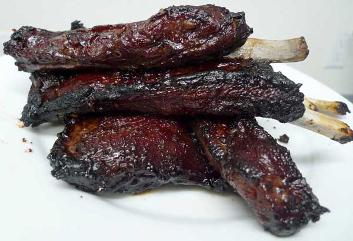

Chinese Barbecued Spare Ribs

Photo by Arnold Gatilao
Spare ribs cooked in a delicious hoisin based barbecue sauce.
Serves up to 8 people.

Ingredients
- 1.8kg/4lbs fresh spare-ribs
- 45ml/3 tbsp dark soy sauce
- 90ml/6 tbsp Hoisin sauce
- 30ml/2tbsp dry sherry
- ¼ tsp five spice powder
- 15g/1 tbsp brown sugar
Procedure
- Cut the spare-ribs into one-rib pieces. Mix all the remaining ingredients together, pour over the ribs and stir to coat evenly. Allow to stand for 1 hour.
- Put the spare-rib pieces on a rack in a roasting pan containing 570ml/1 pint water and cook in a preheated 180C/350F/Gas Mark 4 oven for 30 minutes. Add more hot water to the pan while cooking, if necessary.
- Turn the ribs over and brush with the remaining sauce. Cook 30 minutes longer of until tender. Serve warm.
Tips
- Prep takes about 45 minutes. The ribs must marinate for 1 hour. Cooking takes about 1 hour.
- If the ribs are small and not very meaty, cut into two-rib pieces before cooking, then into one-rib pieces just before serving.
- The ribs may be prepared in advance and reheated at the same temperature for about 10 minutes.